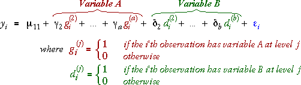

Models with one categorical explanatory variable
As shown on the previous page, a categorical explanatory variable can be used to split the individuals in a regression model into groups. For example, if modelling the income of individuals against their number of years of education (numerical) and gender (categorical), the marital status can be considered to split the individuals into two groups (males and females). The models that were described at the start of this section can therefore be equivalently used when there is a categorical explanatory variable.
For example, a possible model for income, y, with explanatory variables years of education, x, and gender, is
Models with two categorical explanatory variables
When there are two categorical explanatory variables, A with a levels and B with b levels, we can add terms involving the indicator variables for both variables,

This model is also a general linear model (GLM). Note that:
Strength of asphaltic concrete
A civil engineer conducted an experiment to evaluate how different compaction methods and types of aggregate affect the strength of asphaltic concrete. Two types of aggegate and four levels of compaction were used in the experiment and three specimens were tested at each combination of levels for the two factors. The tensile strength of each specimen (psi) was recorded and will be modelled in terms of the two categorical explanatory variables Aggregate and Compaction.
| Compaction method | ||||
|---|---|---|---|---|
| Aggregate type | Static | Regular kneading |
Low kneading |
Very low kneading |
| Basalt | y1 = 68 y2 = 63 y3 = 65 |
y4 = 126 y5 = 128 y6 = 133 |
y7 = 93 y8 = 101 y9 = 98 |
y10 = 56 y11 = 59 y12 = 57 |
| Silicious | y13 = 71 y14 = 66 y15 = 66 |
y16 = 107 y17 = 110 y18 = 116 |
y19 = 63 y20 = 60 y21 = 59 |
y22 = 40 y23 = 41 y24 = 44 |
We will treat Static compression and Basalt as the baseline levels for the two factors. (Any other factor levels could have been used with equivalent results.) The matrix equation below shows the model that is assumed for the response.
Click on any y-value to see how the indicator variables pick out the corresponding parameters for the levels of the two factors (no parameter for the baseline levels and one parameter of each colour for other levels).
The blue grid at the bottom highlights the aggregate-compaction combinations for the selected row. You can also click cells in this grid to select the corresponding observations. Observe that:
Graphical display of model
The diagram below shows the actual data against two categorical axes (for the two factors). The fitted values for the model are also represented by a coloured grid.
There are 3 indicator variables for the 4 compaction levels and 1 indicator variable for the 2 aggregate levels, so the GLM has 4 'explanatory variables' and 5 parameters. The diagram above therefore has 5 red arrows that can be used to adjust the fit of the model.
Drag the red arrows to get the fitted values for all 8 factor combinations close to the data. You may find it helpful to click Separate aggregates to rotate the diagram in a way that separates out the data for the different aggregates before dragging the arrows.
Click Least squares to show the least squares estimates of the parameters. Observe that the model estimates that: